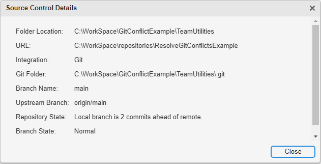

Push to Git Remote
If your local repository contains committed changes that are not in your remote repository, you can push those changes to your remote repository. To check whether your local repository contains changes that are not in your remote repository, right-click in the Files or Project panel and select Source Control > View Details. The Repository State text indicates whether your local repository is ahead of, behind, or coincident with the remote repository.
Alternatively, in the Source Control panel, click the View Details button .

If your local repository is ahead of your remote repository, to push the changes, right-click in the Files or Project panel and select Source Control > Push.
If the push is not successful because another user already pushed their changes and your local repository is behind, you must first pull the latest changes from the remote repository into your local repository. For more information, See Pull Files.
Tip
Git™ does not track empty folders and ignores them when you push. If you need empty folders in your local repository, use MATLAB® projects. MATLAB projects recreate an empty folder structure on project startup after you clone from a remote. To create a project, see Create Projects.
Pull Files
If your remote repository has moved on and your local repository is behind, you can pull the latest changes into your local repository. To pull the latest changes, in the Files or Project panel, right-click the white space and select Source Control > Pull.
A pull action might be unsuccessful if conflicts occur. You must first resolve conflicts. For more information, see Resolve Git Conflicts. If you are resolving conflicts in models, see Resolve Conflicts in Models Using Three-Way Merge (Simulink) instead.
A pull action fetches the latest changes and merges them into your current branch automatically. Alternatively, you can fetch the files first to examine the changes and then merge the changes manually. See Fetch Files.
Fetch Files
To fetch the latest changes from your remote repository, in the Files or Project panel, right-click the white space and select Source Control > Fetch. Fetch updates all of the origin branches into your local repository. Your working folder files do not change. To see the changes from the remote repository, you must first merge the origin changes into your local branches.
For example, if you are on the main branch in your local
repository, get all changes from the main branch in the remote
repository. Then, merge.
Right-click in the Files or Project panel and select Source Control > Fetch.
Merge the
origin/mainbranch changes into the main branch in your working folder.Right-click in the Files or Project panel and select Source Control > Branch Manager.
If you are not on the
mainbranch, switch to it. In the Current Branch of the Branch Manager toolstrip, select themainlocal branch.In the Merge into Current Branch dialog box, select the
origin/mainbranch from the available branches and click Merge.
If conflicts occur, resolve them. For more information, see Resolve Git Conflicts. If you are resolving conflicts in models, see Resolve Conflicts in Models Using Three-Way Merge (Simulink) instead.
See Also
Tools
Functions
gitrepo|gitclone|createBranch|switchBranch|fetch|merge|push